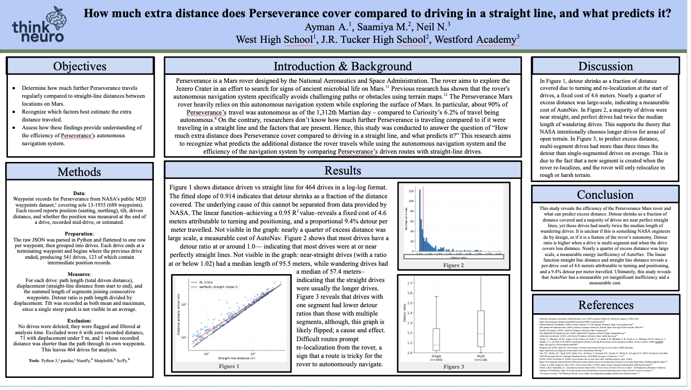
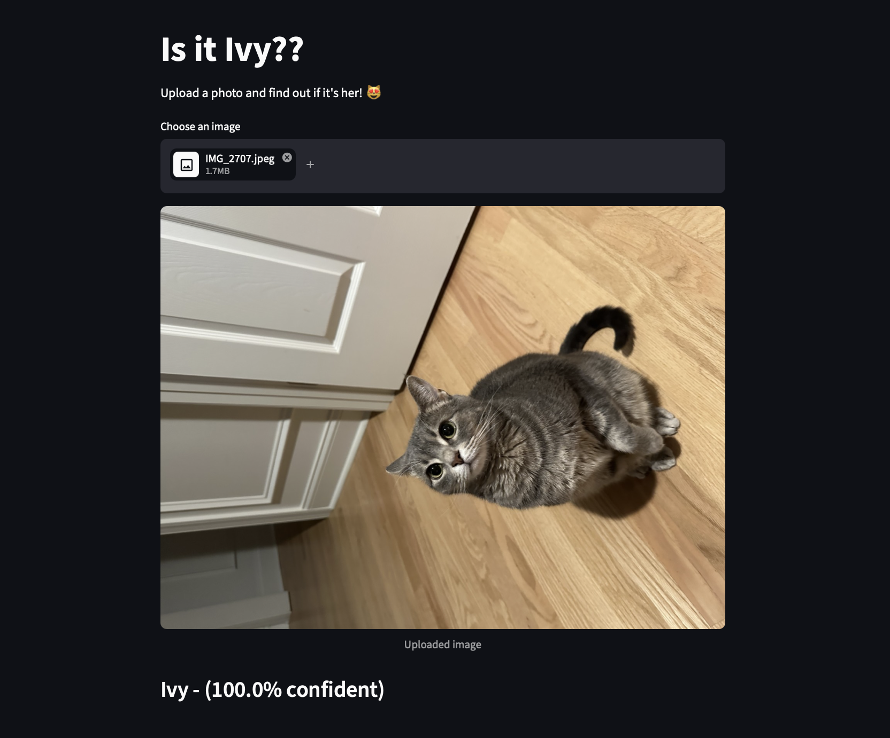

Projects

Aircraft Counter LIF
Manually coded spiking-neural network (SNN) to count aircraft and identify which phase of flight it is in: takeoff, landing, or touch and go. Comprised of five neurons, coded manually in Python with NumPy and OpenCV. Check out my blog about it on this website!

Quantifying Path Efficiency of the Mars Perseverance Rover
Research project developed through ThinkNeuro evaluating the uncharacterized path efficiency of AutoNav in the Mars Perseverance Rover. Expected to present at SCCUR in November 2026.

Ivy Classifier
Binary image classifier built with ResNet18 transfer learning to distinguish my cat from other cats. Trained on more than 1,400 images of people, landscapes, and other cats. Designed for my cat, but can be used for lots of other binary classifications.